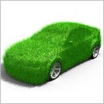
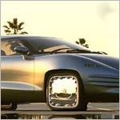
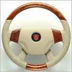
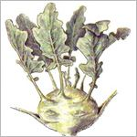
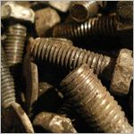
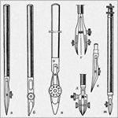

Убедитесь, что автомобиль не зеленый. Это может показаться неважным, однако цвет машины имеет первостепенное значение. Именно по цвету самки носорогов выбирают себе самцов, именно цвет отличает яблоко от баклажана и именно зеленый цвет автомобиля вызывает повышенную агрессию со стороны диких животных. Когда вы будете ехать по лесу, звери могут решить, что вы — дерево или кустарник, и атаковать вас. Кроме того, зеленый цвет пугает автоинспекторов. Примерно по тем же причинам воздержитесь от красного и желтого (красный цвет, к тому же, ассоциируется с помидорами).

Есть ли у автомобиля колеса? Обычно да. Но в последнее время участились случаи, когда нечестные дельцы продают наивным покупателям машины с числом колес меньше трех. Иногда они называют такие автомобили «мотоциклами», но это не так! У мотоциклов, прежде всего, нет кузова и имеются другие конструктивные отличия. Автомобиль, у которого менее трех колес, неустойчив и часто падает. Оптимально количество колес — четыре. Поэтому при покупке тщательно пересчитайте колеса и убедитесь что они а) под кузовом, б) имеют круглую форму и в) крепко привинчены. Внимание! Руль, находящийся внутри кузова, не является колесом, хотя может быть и круглым, и крепко привинченным.

Обязательно проверьте, есть ли в машине руль. Руль является предметом первой необходимости во многих случаях. Например, без руля практически невозможно повернуть налево или объехать случайно встреченную самку носорога. На руле можно прекрасно выспаться перед сложным заданием или красиво разложить несколько вкусных сэндвичей. Уходя из машины, вы можете развесить на руле ваши носки или шарфик — к утру они будут совершенно сухими. Обычно руль в автомобиле вращается, так что рекомендуем проверить и это. Но не давите слишком сильно — если вы сломаете руль, продавец может рассердиться.

Не секрет, что многие покупают автомобиль для перевозки грузов. Если вам не чужда эта страсть, советуем обратить особое внимание на размеры салона и багажника. Хороший, годный автомобиль без труда вмещает тонну свежей кольраби или несколько километров белых льняных ниток. При этом он не должен касаться земли днищем, а доступ к рулю обязан оставаться свободным, хотя бы для одной руки. Не рекомендуем проверять вместимость машины путем заливания в нее больших объемов жидкости — дело в том, что жидкость в автомобилях обычно ведет себя непредсказуемо и результат может вас шокировать.

Требуйте у продавца, чтобы он снабдил вас запасными частями для вашего автомобиля, особенно болтиками. Болтики — это такие маленькие металлические гвоздики со спиральной бороздкой по всей поверхности ножки. Автомобиль очень сильно нуждается в болтиках. Без болтиков кузов часто разваливается, стекла дребезжат, а мотор отказывается гудеть. Средний расход болтиков у обычной машины — пять-шесть декалитров в год, при условии правильной эксплуатации. В случае поездок по лесу это число можно смело увеличить вдвое, а в городских пробках болтики тратятся еще быстрее. Также в качестве запчастей продавец должен выдать вам достаточное количество задвижек и штангенциркуль.
Внимательно обнюхайте вашу предполагаемую покупку. Свежий автомобиль никогда не источает неприятных запахов, а пахнет исключительно левкоями и горным медом; возможны легкие тона корицы, гвоздики, шалфея, пармезана, выдержанной лыжной мази и — в редчайших случаях — бриолина. Несвежий, залежавшийся автомобиль даже после косметического ремонта и покраски (а именно так продавцы обычно скрывают недостатки своего товара) будет пахнуть всякими гадостями. Были случаи, когда от запаха свежекупленного автомобиля хозяева теряли рассудок, принимались царапать себе лицо и кидаться на стены с горестными криками. Если вы не доверяете своему обонянию — попросите, чтобы вместо вас машину понюхал друг или сослуживец.

Покупая машину, будьте готовы к неизбежным дополнительным тратам. Кроме болтиков, вам обязательно понадобятся: футляр (прикрывать машину от непогоды), набор метелок (для снега и пыли), стеклоочиститель, несколько ведер различной емкости, зажигалка, мастерок (а лучше два), швейная машинка с электроприводом, жена (или муж, если вы, не дай бог, женщина), пара сменной обуви, гвоздеотколупыватель, рейсфедер, мобильный телефон, кредитная карта, скворечник (для зябликов), шестнадцатеричный арифмометр с подогревом, шест для прыжков в высоту и участок земли примерно три на три метра (желательно в хорошем зеленом пригороде). Если какие-то из этих предметов у вас уже есть — не пугайтесь, это еще ничего не значит.